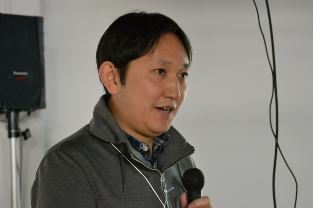
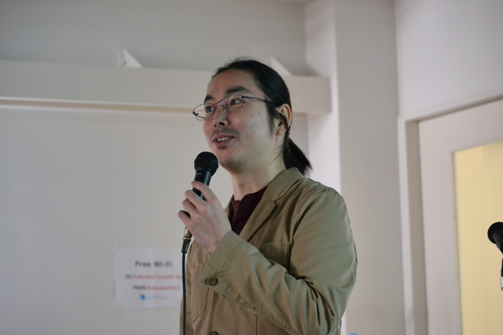
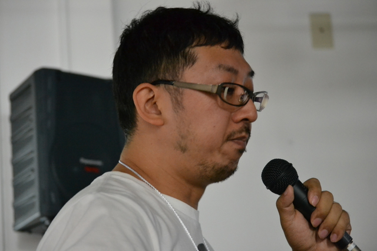
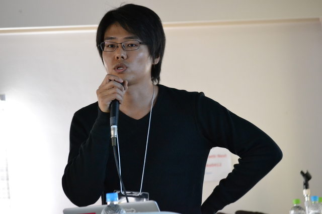
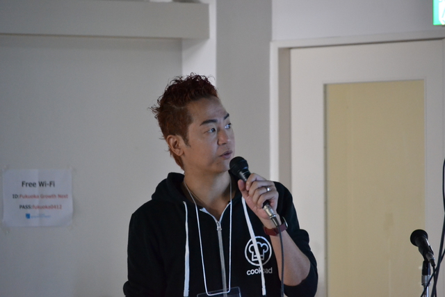

RegionalRubyKaigi レポート (67) 福岡Ruby会議02
RegionalRubyKaigiレポート (67) 福岡Ruby会議02
- 開催日時 - 2017年11月25日 9:45-18:00
- 開催場所 - 大名小学校跡地 FUKUOKA growth next
- 主催 - Fukuoka.rb / Engineer Lab. Fukuoka
- 後援 - 一般社団法人 日本Rubyの会
- 公式サイト - 福岡Ruby会議02 by Fukuoka.rb & Engineer Lab. Fukuoka
- 公式ハッシュタグ - #fukuokark02
書いた人: @nagachika, @bake0937
はじめに
福岡でほぼ隔週でミートアップが開催されている Fukuoka.rb と、Engineer Lab. Fukuoka の主催で 5年ぶりの福岡 Ruby 会議が開催されました。
プログラム
午前の部
Opening Talk

- 発表者
- 近藤 うちお (@udzura)
まずは実行委員長近藤うちお(@udzura)さんから、会場諸注意およびスポンサーの紹介と福岡で2回目の地方 Ruby 会議を開催できたことの喜びの言葉で福岡 Ruby 会議は始まりました。
A Ruby Programming Episode
- 発表者
- 島田 浩二 様(@snoozer05)
- 資料
トラック1 最初は福岡へは初めて来たという島田さんによる発表。普段 exercism.io という様々なプログラミング言語の問題集サイトで Ruby の問題に取り組んでいる様子について、実際の問題を解くライブコーディングを交えながらお話し頂きました。島田さんの問題に取り組むスタイルは、まず問題を理解するため簡単なコードを書き、それを試行錯誤しながらロジックを完成させて、次にリファクタリングして「Ruby っぽいコード」になるように整理していくという手順でした。
このようなプロセスのなかで島田さんにとって Ruby とは、問題をよく見えるようにしてくれるめがねであり、思考をスケッチするためのペンであり、思考を助けてくれる言語であるとして、Ruby のツールとしての3つの役割があると語られました。
福岡 Ruby 会議02のテーマである「もう一度、Ruby と出会う」というテーマにとてもマッチした素敵なトークでした。
Ruby で書く Parser (自力かライブラリか、それが問題だ)

- 発表者
- 鳥井 雪 様(@yotii23)
- 資料
トラック2 最初の発表は福岡出身の鳥井さんが Ruby で一から構文解析パーサー(以下、パーサー)を書いた時に得た知見や感じたことについてお話し頂きました。パーサーは JSON ではなく Ruby で書きたい、Elixir のようなパターンマッチング機能が欲しいというちょっとした出来心がきっかけで自作のパーサーを書くことになったそうです。 今回はパーサーの中でも、文字列を受け取って Tokenize し、Tokenize した Tokens で AST (抽象構文木)を構築する仕組みについてお話をして頂きました。
パーサーの gem treetop との比較についてのお話もあり、自作のパーサーについての課題点はあるが、実際にパーサーを書いたことで、
- 自分の書いたコードが「これらの文字列はこれから解釈される」という目で見ることが出来るようになり、パーサーの気持ちがわかるようになった!
- ぼんやりと理解していたパーサーの組み立て方がわかるのが楽しい!!
- treetop の仕組みを改めて理解できるようなった
- Ruby 本体の Parse もすごい
など沢山の発見や経験を得ることができ、まさに「もう一度、Ruby と出会う」を体験できた発表内容であると感じました。
メドピアの全力Rails化取り組み晒します(めんたいトーク #1)

- 発表者
- 福村 彰展 様（メドピア株式会社 執行役員 CTO）
- 資料
続いてはめんたいスポンサーのメドピア株式会社様のスポンサーセッションでした。 なんと社長が現役の医師という医師専用のメディアサービスを展開しているメドピア株式会社では、医師の知見を集める UGC 型サイト(いわば医師版 Qiita)を運営しており、そのフレームワークを PHP の独自フレームワークから Rails へ移行するため様々な取り組みをされたそうです。CI の導入、コードレビューの徹底、テストを書く文化の育成などなどの取り組みが紹介されました。特にコードレビューのふりかえり会という取り組みは、指摘の共有や知見の蓄積が進むだけでなく話し合いによって納得感が得られるということで興味深かったです。 スポンサートークでありながら技術的にも非常に参考になるトークでした。
Keynote: Finding Ruby Again

- 発表者
- 松田 明 様 (@a_matsuda)
- 資料
1 つめのキーノートは Ruby および Rails のコミッターである松田さんによる、「Ruby のよさ」について真面目に考えてみたというトークでした。 「Ruby の良さといってもいっぱいありすぎて、どれが自分にいちばん効いているのかよくわからない」という松田さんは、プログラミングをはじめた時の原体験をふりかえりつつも「これは Ruby が楽しかったのではなくて、プログラミングそのものが楽しかったのでは?」と述べ、Ruby 固有のよさは「人間らしさを尊重してくれるプログラミング言語」であるところではないかと述べておられました。
さらに Ruby on Rails の登場により「Ruby なのに仕事になる」という時代の到来を振り返りつつ、Rails の開発チームのコントリビューターをとても大切にする文化や、欲しいものは自分で作るという Rails 周辺の文化の魅力が語られました。 また RubyKaigi のオーガナイザーでもある松田さんは RubyKaigi についても「最高に満足できる理想のカンファレンスがないから自分で作ろうと思った」とのこと。RubyKaigi では技術的なトークが重用されているとよく言われるけれど、それだけではなく「Ruby の OSS のコードを実際に書いて晒している人の話をきくためのカンファレンス」にしたいと考えているとのことでした。 Ruby, Rails, RubyKaigi についての非常に内容の濃いキーノートでした。
午後の部
マネーフォワードにおける Ruby エコシステム事例の紹介と、CTOより福岡の皆様へご挨拶(めんたいトーク #2)
 
- 発表者
- 中出 匠哉 様（株式会社マネーフォワード CTO）
- 卜部 昌平 様（同 フルタイム Rubyコミッター）
午後最初のトラック1 のセッションはめんたいスポンサーの株式会社マネーフォワード様のスポンサーセッションでした。 家計簿サービスと会計サービスを提供しているマネーフォワードではサービスの開発に Rails を利用しており、3名の Ruby コミッターも所属していて Ruby 開発者会議の会場提供など Ruby の開発の支援も行なっているそうです。また福岡に開発拠点を置く予定とのことでした。 またフルタイム Ruby コミッターの卜部様からは執筆中の書籍のためにサンプルコードの動作確認を行うためのツールの紹介がありました。
Rust で書いたライブラリを Ruby/mruby から呼び出す実践的な方法

- 発表者
- 宮下 剛輔 様（Serverspec Operations）
- 資料
続いては Serverspec や libspecinfra の作者である宮下さん(@mizzy さん)から、Rust 製のライブラリとして開発した libspecinfra の MRI/mruby のバインディングの開発から得られた知見についての発表がありました。 libspecinfra は様々な言語から利用できるライブラリにすることを目指すため、開発しやすさとバインディングの書きやすさを考え FFI を組み込みでサポートしている Rust で開発することにしたそうです。 Rust から他言語で書かれた関数を呼ぶことも、Rust で書かれた関数を他言語から呼ぶのも容易に実装できるとのことでしたが、今回の発表は Rust で書かれた関数を MRI および mruby からよぶ方法についての発表です。 MRI からの利用は ffi.gem を利用して libffi 経由で、mruby からは C 言語で拡張ライブラリ(mrbgem) を書くことでバインディングを実装したそうです。 Rust の構造体を受け渡す場合構造体の内容はバインディング側から不可視にするためポインタとして受け渡したり、Rust の Trait を直接渡すとエラーになったため構造体でラップするなど、具体的な課題と回避策についても述べられていました。 エラー処理についても、戻り値を構造体にしてエラー時にはエラーメッセージを返すようにして、エラーを例外にマッピングするのはバインディング部分で行うなど、Rust のライブラリ本体は Rust として使いやすいコードになるよう設計し、各言語の流儀にあわせるのはバインディング部分で違いを吸収するようにしているということでした。 他言語間の呼び出しという高度な内容で、実際のコードを交えての非常に実践的な発表でした。
Railsチュートリアルを支える継続的組版技術

- 発表者
- 安川 要平 様(@yasulab)
- 資料
日本語訳の Ruby on Rails チュートリアル(以下、Rails チュートリアル)や CoderDojo Japan でおなじみの安川さんの発表です。本発表では電子書籍 Rails チュートリアルを Ruby で継続的に組版を自動化する技術についてお話し頂きました。今回は特に Gumroad を利用して電子書籍を自社で組版して販売する仕組みについてのお話でした。組版には
- 更新
- 組版
- 検証
- 通知
- 頒布
の大きく分けて 6つの工程があります。 LaTeX で書いた原稿を更新し、softcover という gem を使って EPUB、PDF、HTML+docset と各媒体へ組版します。 組版した各媒体は
- EPUB → takahashim/epubcheck-ruby
- PDF → yasslab/hamidashi
- HTML+docset → jnicklas/turnip
を利用して各媒体のページの文字がはみ出していないか等の不備を検証します。 検証の結果は idobata で通知され、OK の場合は Gumroad へ頒布するとのことです。 この工程を「継続的」にするにあたり課題になったのが softcover に必要なライブラリのバージョン毎のブレが原因によるページの不備であるとお話されていました。 (例えば、自分の開発環境だとページの文字はズレていないが他のメンバーの開発環境ではズレている等) これを解決するために Docker で環境を統一し、組版の処理は Docker コンテナ上で実行するようにしているとのことです。 「組版の技術が確立される前は手作業でやっていたのでしょうか?」という質問をしたところ、「最初はやはり手作業でやっていた」というと回答をされ、 会場が「おお〜!!」と驚く場面もありました。 発表の最後には Re:VIEW と Softcover で使われているパッケージの違いや Rails チュートリアルの販売例についてのご紹介があり、 月間の読者が 1.3万人である Rails チュートリアルの裏側の一部を知ることができた素晴らしい発表でした。
mockmockを支える技術 (めんたいトーク#3)

- 発表者
- 毛利 啓太 様（株式会社Fusic 技術開発部門 mockmock 開発チーム プロダクトオーナー）
- 高瀬 昭弘 様（同 mockmock 開発チーム）
- 資料
めんたいスポンサーの株式会社 Fusic 様からは IoT 機器のテストデータを送信するデバイスシミュレーターサービス mockmock の紹介とシステム構成や開発環境の紹介がありました。
機器からのデータを受信する IoT サービスの開発者向けに、動作検証や負荷試験用のデータ生成と送信を行うモックを提供するサービスだそうです。時系列で変化するデータの生成もサポートしていて、思いどおりになる仮想的なデバイスを作ることができます。 AWS をメインとしたクラウドサービス上に構築されており、実際のデータ生成や送信を行うプロセスは mruby で実装されておりビルド時間を短縮するために大きなライブラリは独自に事前ビルドしておくなどの工夫をしているそうです。 IoT ブームのなかで IoT サービスそのものではなくて IoT サービス開発者に向けたサービスという着眼点がおもしろいと思いました。
スポンサー LT 大会 「とんこつスタジアム」（仮題）
トラック1 の午後4つめのセッションは、とんこつスポンサーの 5社のスピーカーによるスポンサー LT 大会が開催されました。
サービス展開を支えるRubyの活用と組織的スケーリングの勝利の鍵
- 発表者
- 小芝 敏明 様（ピクシブ株式会社）
- 資料
フロイデのご紹介
- 発表者
- 熊谷 悦史 様（フロイデ株式会社 開発事業部）
日本一エンジニアが心豊かに働ける会社をつくる
- 発表者
- 川井 健史 様（株式会社メンバーズ）
俺たちとペパボとロリポの“やっていき”の話
- 発表者
- 鳴海 弘輝 様（GMOペパボ株式会社）
- 資料
虎の穴とRuby
- 発表者
- 野田 純一 様（株式会社虎の穴 開発室 課長）
コンパイル時計算への招待

- 発表者
- take-cheeze 様(@take-cheeze)
- 資料
take-cheeze さんによる、Ruby でどのようにコンパイル時計算を実現するのかについての発表です。コンパイル時計算はプログラム実行時に計算するのではなく、プログラムのコンパイル時に計算をすることで高速化を図る方法です。冒頭では、C++を例にコンパイル時計算が発達した背景についてや JIT コンパイルによる高速化との違いについてなどコンパイル時計算とはどういったものなのについての説明から始まりました。 そして、本題である Ruby でのコンパイル時計算を Rails と Hanami の 2つで検証をした結果についてお話されました。どちらも主に
- Ruby にメソッドの追加定義を禁止できるように改変
- 一部の処理を eager_load で実行
- Web サーバが立ち上がる直前でメソッドの追加定義を禁止
を行ってコンパイル時計算を検証したとのことです。 結果は、どちらもページを表示させるところまでは到達せず、どちらもコンパイル時計算は当面は有用ではなさそうとのことでしたが、クラスマクロの導入や Emacs の portable dumper の仕組みをヒントにした実装についてなど別の視点についてのお話もあり、コンパイル時計算の実現の方法はまだまだあるという印象を受けました。 最後に他言語(Rust、Swift、Golang、mruby、Erlang)でのコンパイル時計算の実現についての考察のご紹介もありました。 C++ など他の言語で得た技術・知見を Ruby でどのように表現することで高速化ができるのかという視点を得られたことや Ruby 以外の言語ではどのように高速化を図るのかについて興味が湧いてくる発表でした。
200 万ドメインの HTTPS 化を見据えた mruby による大規模証明書管理アーキテクチャ

- 発表者
- 松本 亮介 様(GMOペパボ シニアプリンシパル)
- 資料
午後の休憩後のセッションは GMO ペパボの松本さんによる、ロリポップの HTTPS 化のための証明書情報の保持に nginx-mruby を使ったソリューションについての解説でした。 ロリポップでは非常に多数のサイト(ドメイン)が同一のハードウェア上に集積されており、2016年ごろ Let’s Encrypt による無料証明書の配布による HTTPS 化の影響で、リバースプロキシが非常に大量の証明書を保持しないといけなくなるという問題に直面していたそうです。 全てのドメインの証明書を起動時に読み込むとプロセスの起動が遅くなり、また大量のメモリを消費するためハードウェアコストが増大するという課題があったそうです。これを解決するため nginx-mruby から OpenSSL 1.0.2 で追加された TLS ハンドシェイク時のコールバックを利用できるようにして、必要になった時に動的に証明書を読み込むようにしたそうです。大量のドメインのうち頻繁にアクセスがあるのは一部であるため、実際に必要になった時に読み込むようにすることで、起動は高速になり消費メモリ量も抑えられたとのこと。定期的なプロセスの再起動のタイミングで読み込まれた証明書情報のためのメモリは解放されるため、メモリ使用量が増大し続けることも防げたそうです。 しかし冒頭で「科学の話をします」と述べた松本さんはこの結果を紹介するだけにとどまらず、「定量的な考察や評価をしっかりとすることが大事」と、起動速度とメモリ消費量について実験環境での従来手法との比較評価をし、さらに本番環境での評価結果を提示してどの程度のコスト削減に繋がったのかを算出されていました。こうして定量的な評価をする過程で、ndinx-mruby のメモリリークの発見にもつながり、さらに安定した運用が可能になったとのことでした。 理路整然とした課題やその解決手段の説明がとてもわかりやすい発表でした。
なぜRubyだったのか？Rubyで成長したOSS

- 発表者
- 小山 健一郎 様(@k1LoW)
- 資料
午後の休憩後のトラック2 は awspec の作者である小山さんによる発表でした。本発表では、AWS 上に展開したリソースがあるべき状態になっているかをテストするツールである awspec がなぜ Ruby を採用し、どのように成長していったのかを紹介する内容でした。この発表で驚いたのは、小山さんは普段は PHPer で、Ruby を一度は挫折していたとお話されていたことです。 しかし、
- Serverspec と出会ったことで Serverspec のように AWS のリソースのテストがしたいという強い気持ち
- Ruby の言語としての表現力に惹かれたこと
で Ruby への苦手意識よりも作りたい気持ちが勝ったことで Ruby を採用し、awspec の開発が始まったとのことです。
awspec は Serverspec のソースコードを grep しながら解析し、実装していくのに加えて、様々なユーザーのフィードバックや協力により成長していきました。 また、実行委員長の近藤(@udzura)と Fukuoka.rb で Ruby についての質問や悩みをペアプロを通して解決するエピソードについてもお話されていました。 このペアプロにより Awspec::ResourcesReader が完成したとのことです。 そして、awspec のどのようなプルリクエストがあったのかについての発表もあり、難しかった点として awspec の実際のユースケースや事例をプルリクエストや issue の内容から想像することを挙げていました。(本当にわかるのは自分のユースケースだけのため) しかし、それ以上に世界中から自分が発想もしなかった便利な機能のプルリクエストが来たことがとても嬉しいことであるとお話されていました。
これからは、AWS の SDK の機能拡張には追従しつつ、「安全」を第一として、awspec をメンテナンスしていくとのことです。 最後にはなんと、この発表の場で awspec を v1.0.0 にアップデートをし、会場は大きな拍手で溢れました。 Ruby の魅力に加えて OSS 開発のやりがいや魅力、そして様々な人たちやコミュニティと共に力を合わせて OSS を成長させていくことを実感することができた発表でした。
CookpadとRuby(飛び梅トーク)

- 発表者
- 庄司 嘉織 様（クックパッド株式会社 技術部部長/エンジニア統括マネージャ）
続いては飛び梅スポンサーのクックパッド株式会社様からのスポンサートーク。 クックパッドのサービスの世界展開や開発拠点の国際化の紹介から、かつて「世界一巨大なモノリシック Rails サイト」として知られていたクックパッドも近年ではマイクロサービス化を進めているとのことで、多数のオープンソースライブラリやツールの紹介をされていました。
Keynote: Rubyにおけるトレース機構の刷新

- 発表者
- 笹田 耕一 様
- 資料
2つめのキーノートはクックパッドのフルタイムコミッターでもある笹田さんから、Ruby 2.5 から導入されるトレース機構の変更点についての紹介がありました。 Ruby には TracePoint というデバッガやプロファイラから利用することを想定した、Ruby のプログラムの実行状況を取得するための機構があります。これまでは Ruby スクリプトを Ruby の VM の命令にコンパイルする時に、各所にトレースのための命令(trace 命令)を挿入していて、その命令の処理としてはどの行を実行しているのか、どのような操作が行なわれているのかのイベントフックの呼び出しをトレース機能が有効かどうかのフラグをチェックして行なっていました。 しかしこれだとトレース機能は利用していない場合でも、フラグチェックが行われます。トレース機能は通常のアプリケーションではほとんど利用されないので、多くの場合は不要な分岐を行なっていて常に少しだけ無駄な処理をしているという状態だったそうです。 ここで笹田さんは高速化を考える時の戦略として、処理には偏りがあるのでよく使われるケースを高速化しめったに使われないケースは遅いままにする、または少し遅くなっても許容するという考え方を披露し、これをトレース機構にあてはめて、trace 命令の埋め込みをやめることでトレース機能を使わない時には不要な分岐処理をしないようにして高速化したことを報告されました。 トレース機能を使わない時は高速化するかわりに、トレース機能の on/off を切り替える時に、VM 命令を全て trace 機能つきの命令に書き換えるという重い処理を行うため、頻繁にトレース機能の on/off を行うプログラムは遅くなってしまうそうで、当初はマイクロベンチマークで約4万倍遅くなっていたものを、いくつか命令書き換えの遅延をする最適化を導入することで200倍遅い状態にまでは改善しているとのことです。 Ruby インタプリタ本体の高度な内容でしたが、大部分のユーザーにとっては2.5以降少し高速化されるということで、楽しみです。
著者について
Ruby 安定版メンテナ。 PB memo というブログで毎日 CRuby のコミットの解説を書いています。
- 岡部恭平 (@bake0937)
北海道出身。大学時代はJava、前職ではVB.NetとPL/SQL、今は仕事で主にRuby、PHP、JavaScriptを書いてます。